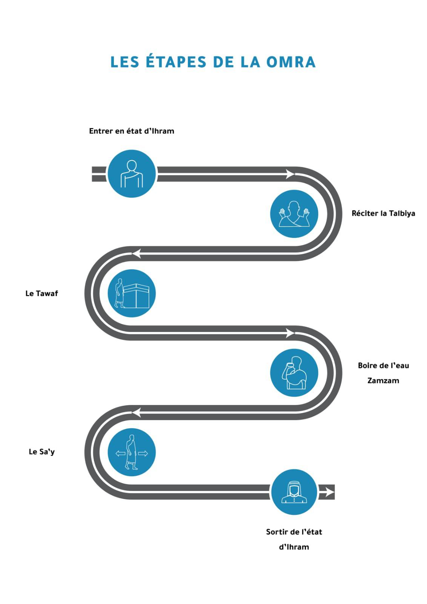
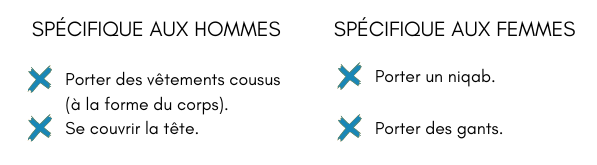
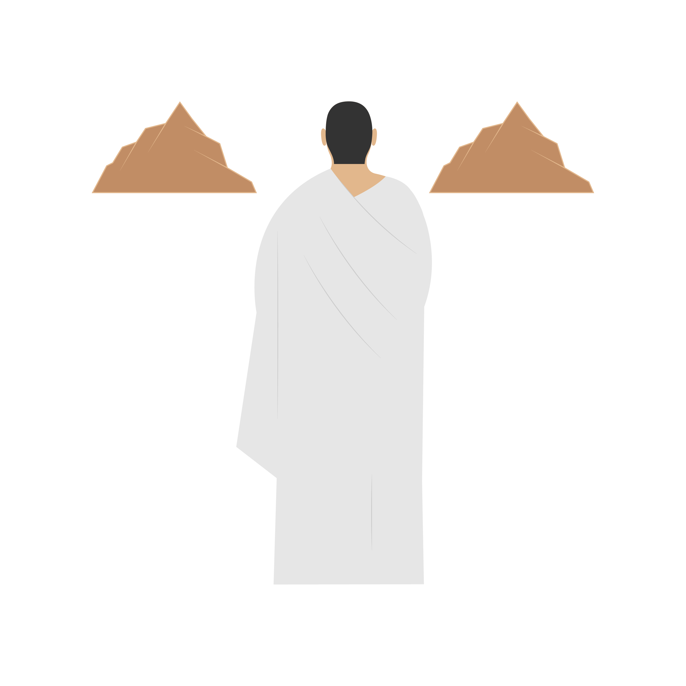
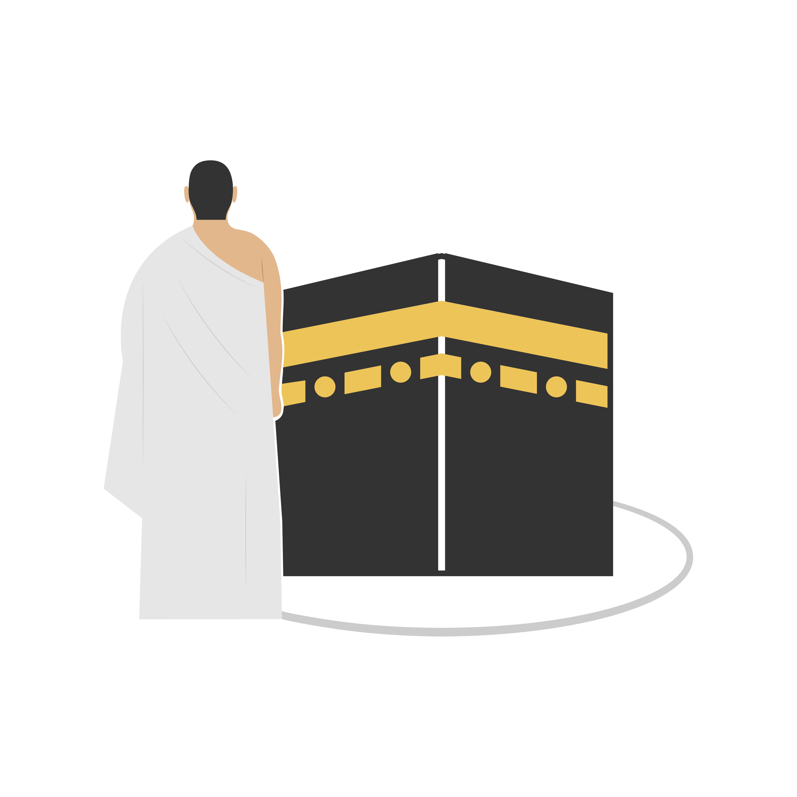
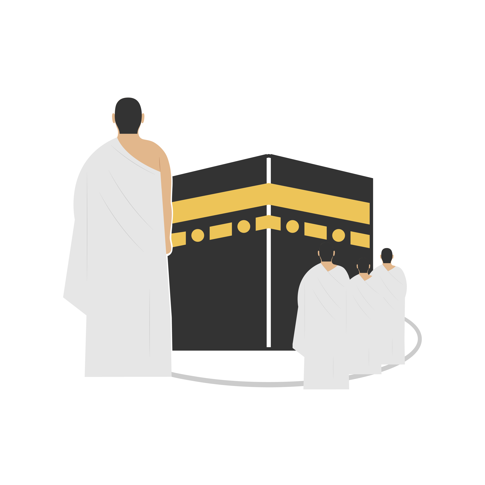
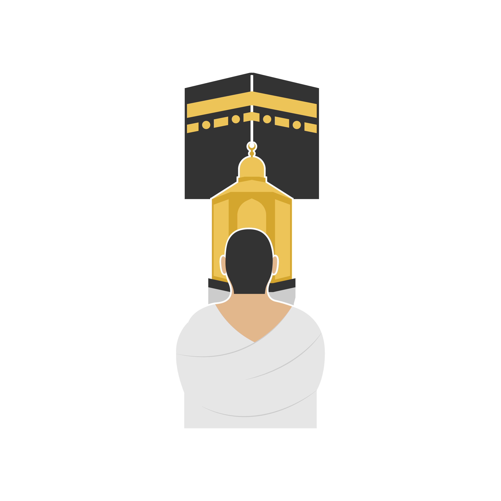
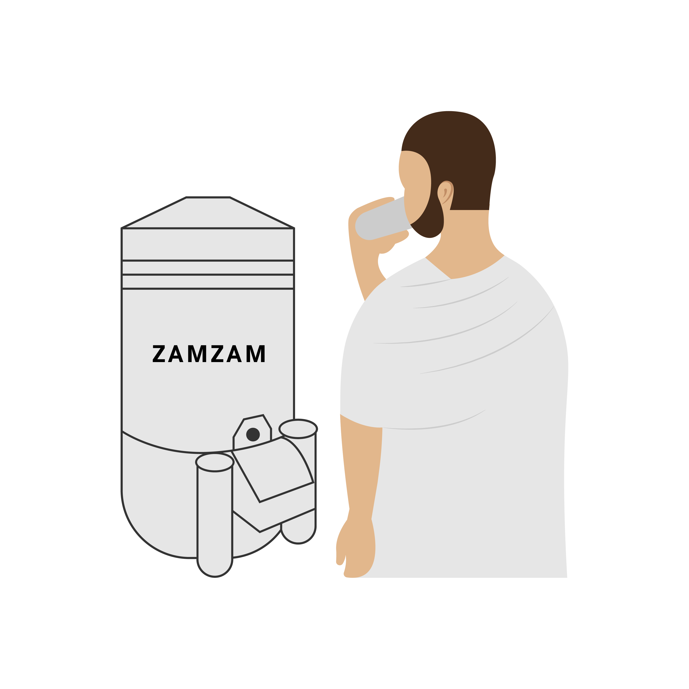
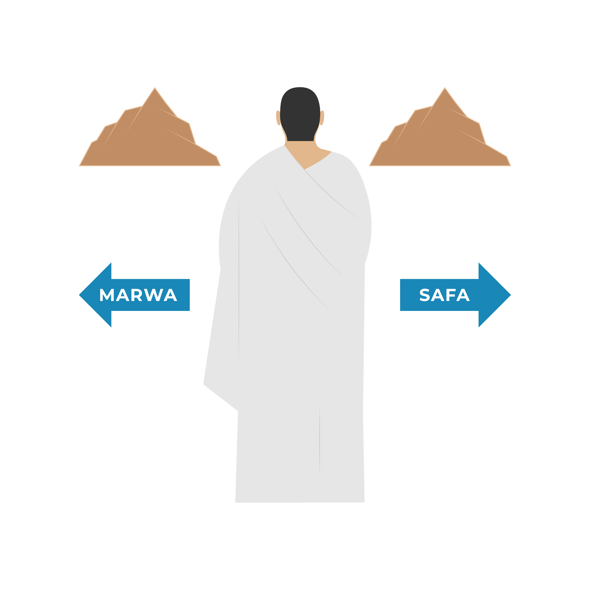

« Le pèlerin Hajj ainsi que le pèlerin Omra sont une délégation d’Allah, Il les a appelés et ils ont répondu, ils Lui ont demandés et Il leur a accordé. »
ُ عن جابر رضي الله عنه قال النَّبيُّ صلَّى اللهُ عليهِ وسلَّم : "الحُجَّاجُ وَالعُمَّارُ وَفْدُ اللهِ، دَعَاهُمْ فَأَجَابُوهُ، وَسَأَلُوهُ فَأَعْطَاهُمْ"

Si un seul de ces piliers n'est pas accompli, la 'Omra n'est pas valide.
Si un seul de ces actes n'est pas accompli, le pèlerin devra s'acquitter d'un sacrifice compensatoire pour que sa 'Omra soit valide.
Celui qui les accomplit, c'est meilleur pour lui. Celui qui les délaisse ne commet aucun péché.
Tout acte rapporté authentiquement par le Prophète ﷺ, en dehors des piliers et des obligations, est un acte surérogatoire.
Pour entrer dans le territoire sacré de La Mecque, le pèlerin doit être en état dit de « sacralisation » : l’état d’ihram.
Mettre la tenue d’ihram spécifique pour les hommes*, composée :
*Vêtement classique pour la femme (voile légiféré) sans se couvrir les mains et le visage.
لَبَّيْكَ اللَّهُمَّ عُمْرَةً
Labbayka Allahumma 'umrah
Je réponds à Ton appel, Ô Allah, par une Omra

Pour maintenir cet état d’ihram, le pèlerin doit prendre certaines précautions. En effet, il est interdit de :

À partir de quand ?
Bon à savoir
Il est tout à fait possible de passer par votre hôtel et déposer vos affaires avant d’entamer le Tawaf.
Il est également recommandé de refaire ses grandes ablutions avant de se rendre à la mosquée sacrée, comme l'a fait le Prophète ﷺ, en faisant attention à ne pas utiliser de savon ou de produit parfumé.
لَبَّيْكَ اللَّهُمَّ لَبَّيْكَ، لَبَّيْكَ لا شَرِيكَ لَكَ لَبَّيْكَ، إِنَّ الْحَمْدَ، وَالنِّعْمَةَ، لَكَ وَالْمُلْكَ، لَا شَرِيكَ لَكَ
Labbayka llāhumma labbayk, labbayka lā sharīka laka labbayk, inna l- hamda wa n-ni'mata, laka wa l-mulk, lā sharika lak.
Me voilà, ô Seigneur, me voilà ! Tu n'as aucun associé. Me voilà ! Certes, la louange, le bienfait et la souveraineté absolue T'appartiennent, Tu n'as aucun associé.

LES CONDITIONS DU TAWAF :
INVOCATION À DIRE AU DÉBUT DU TAWAF
بسمِ اللهِ وَاللهُ أَكْبَرُ، اللَّهُمْ إِيمَانًا بك وَتَصْدِيقًا بكتابك وَوَفَاءَ بِعَهْدِكَ وَأَثْبَاعًا لِسُنَّةِ نَبِيَّكَ صَلَّى اللَّهُ عَلَيْهِ وَسَلَّمَ
Bismi-Llâhi wa-Llâhou akbar, Allâhoumma îmânan bika wa tasdîqan bi-kitâbika wa wafâ'an bi-'ahdika wa itibâ'an li-sounnați nabiyyika salla Llâhou 'alayhi wa sallama.
Au nom d'Allah et Allah est le plus grand. Ô Allah, par foi en Toi, et par croyance en Ton Livre, et par fidélité à Ton pacte, et en suivant la tradition de Ton Prophète (paix et bénédictions d'Allah sur lui).

رَبَّنَا آتِنَا فِي الدُّنْيَا حَسَنَةً وَفِي الْآخِرَةِ حَسَنَةً وَقِنَا عَذَابَ النَّارِ
Rabbanâ âtinâ fi-d-dunyâ hasana wa fi-l-âkhirati hasana wa qinâ 'adhâb an-når
Seigneur, accorde-nous une bonne part ici- bas et une bonne part dans l'au-delà, et protège-nous du châtiment du feu.

C’est une grande recommandation prophétique. Lorsque vous approchez du Maqâm Ibrahim, vous pourrez citer le verset, dans sa version en arabe :
Ils ont adopté la station Ibrahim comme lieu de prière - Sourate Al Baqarah - verset 125
I L EST RECOMMANDÉ DE RÉCITER :
1ere unité Sourate Al Karifoun.
2eme unité Sourate Al Ikhlas.
Les hommes doivent recouvrir l'épaule droite avant de prier.
Bon à savoir : S’il y a trop d’affluence, vous pouvez vous éloigner. Cette prière peut être effectuée n’importe où dans la Mosquée.
Infos sécurité : Le pèlerin doit éviter de prier sur le mataf, là où les autres pèlerins circulent.
À DIRE PRÈS DE MAQÂM IBRAHIM AVANT D'EFFECTUER CETTE PRIÈRE
وَاتَّخِذُوا مِن مَّقَامِ إِبْرَهِيمَ مُصَلَّى
Wa Attakhidhu Min Maqāmi 'Ibrāhīma Muşallaan
Et ils ont adopté la station Ibrahim comme lieu de prière

Durant la ‘Omra, vous pouvez profiter de tous les bienfaits de l’eau de Zamzam. En effet, il est recommandé à ce stade d’en boire à satiété, tout en invoquant Allah ﷻ.
Lorsqu’on boit de l’eau de Zamzam, il est recommandé de manière générale de boire assis et en 3 fois.
Bon à savoir :
À ce stade, il est possible de se reposer un peu avant d’entamer l’étape suivante.
INVOCATION DU COMPAGNON IBN ABBAS
اللَّهُمَّ إِنِّي أَسْأَلُكَ عِلْمًا نَافِعًا وَرِزْقًا وَاسِعًا وَشِفَاءً مِنْ كُلِّ دَاءِ
Allâhoumma innî as'alouka 'ilman nâfi'an wa rizqan wâsi'an wa shifâ'an min koulli dâ'in.
Ô Allah, je Te demande une science utile, une subsistance abondante et une guérison de toute maladie.

LE PARCOURS ENTRE SAFA ET MARWA
Safa et Marwa sont deux monticules non loin de la Ka’ba. Le Sa’y consiste à effectuer 7 fois le parcours entre eux, ce qui correspond à un peu moins de 400 mètres de distance pour chaque trajet.
À DIRE EN ARRIVANT SUR SAFÂ
إِنَّ الصَّفَا وَ المَرْوَةَ مِنْ شَعَائِرِ اللهِ
Inna safâ wa-l-marwata min sha'â iri l-lâh.
Al-Safa et Al-Marwa sont vraiment parmi les lieux sacrés d'Allah. Sourate 2 - Verset 187
أَبْدَأَ بِمَا بَدَأَ اللهُ بِهِ
Abda'u bimâ badaa l-lâhou bihi
Je commence par ce avec quoi Allah a commencé.

Bon à savoir : Entre chaque monticule, le pèlerin peut invoquer librement.
SUR SAFA ET MARWA EN SE DIRIGEANT VERS LA KA'BA
اللهُ أَكْبَرُ، اللهُ أَكْبَرُ، اللهُ أَكْبَرُ، لا إلَهَ إِلَّا اللهُ وَحْدَهُ لا شَرِيكَ لَهُ، لَا الْمُلْكُ وَلَهُ الْحَمْدُ يُحْيِي وَيُمِيتُ وَهُوَ عَلَى كُلِّ شَيْءٍ قَدِيرٌ، لَا إِلَهَ إِلَّا اللهُ وَحْدَهُ أَنْجَزَ وَعْدَهُ، وَنَصَرَ عَبْدَهُ وَهَزَمَ الْأَحْزَابَ وَحْدَهُ
Allahu akbar, Allâhu akbar, Allâhu akbar, Lâ ilâha illâ l-lâhu, wahdahu lâ sharîka lahu, lahu-l-mulku wa lahu-l-hamdu, yuhyî wa yumît, Wa fik bârakAllah huwa 'ala kulli shay'in qadîrun.Lâ ilâha illâ l-lâhu wahdahu. Anjaza wa'dahu, wa nasara 'abdahu, wa hazama-l-ahzâba wahdahu
Allah est le plus grand, Allah est le plus grand, Allah est le plus grand. Il n'y a pas de divinité digne d'être adorée à part Allah, seul, sans associé. À Lui appartient la Royauté et à Lui revient la louange, Il donne la vie et Il donne la mort, et il a le pouvoir sur toute chose. Il n'y a pas de divinité digne d'être adorée à part Allah, seul. Il a accompli Sa promesse, a accordé la victoire à Son serviteur, et a vaincu les coalisés seul.
12 PUIS INVOQUER ALLAH EN LEVANT LES MAINS, ENSUITE RÉPÉTER CELA UNE DEUXIÈME FOIS, PUIS UNE TROISIÈME FOIS.
La coupe de cheveux est obligatoire pour les hommes et les femmes. Pour les hommes, il s’agit de se raser ou se couper les cheveux sur toute la tête. Le rasage est meilleur.
Des coiffeurs sont d’ailleurs présents pour couper les cheveux des hommes, dès la sortie de la Mosquée. Il est également possible de le faire dans sa chambre d’hôtel.
Cette option doit etre à privilégier pour les femmes, qui se couperont alors une partie de leurs cheveux, de la taille d’une phalange (1 à 2 cm).
C’EST L’ÉTAPE DE LA DÉSACRALISATION, LE PÈLERIN SORT DE L’ÉTAPE D’IHRAM
